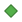

<!DOCTYPE html>
<html lang="en">
  <head>
    <meta charset="utf-8" />
    <meta http-equiv="X-UA-Compatible" content="IE=edge" />
    <meta
      name="viewport"
      content="initial-scale=1,user-scalable=no,maximum-scale=1,width=device-width"
    />
    <meta name="mobile-web-app-capable" content="yes" />
    <meta name="apple-mobile-web-app-capable" content="yes" />
    <link rel="stylesheet" href="css/leaflet.css" />
    <link rel="stylesheet" href="css/qgis2web.css" />
    <link rel="stylesheet" href="css/fontawesome-all.min.css" />
    <style>
      html,
      body,
      #map {
        width: 100%;
        height: 100%;
        padding: 0;
        margin: 0;
      }
    </style>
    <title>Floyd County Water Department</title>
  </head>
  <body>
    <div id="map"></div>
    <script src="js/qgis2web_expressions.js"></script>
    <script src="js/leaflet.js"></script>
    <script src="js/leaflet-svg-shape-markers.min.js"></script>
    <script src="js/leaflet.rotatedMarker.js"></script>
    <script src="js/leaflet.pattern.js"></script>
    <script src="js/leaflet-hash.js"></script>
    <script src="js/Autolinker.min.js"></script>
    <script src="js/rbush.min.js"></script>
    <script src="js/labelgun.min.js"></script>
    <script src="js/labels.js"></script>
    <script src="data/GPS_2.js"></script>
    <script src="data/FloydCountyFill_3.js"></script>
    <script>
      var map = L.map("map", {
        zoomControl: true,
        maxZoom: 28,
        minZoom: 1,
      });
      var hash = new L.Hash(map);
      map.attributionControl.setPrefix(
        '<a href="https://github.com/tomchadwin/qgis2web" target="_blank">qgis2web</a> &middot; <a href="https://leafletjs.com" title="A JS library for interactive maps">Leaflet</a> &middot; <a href="https://qgis.org">QGIS</a>'
      );
      var autolinker = new Autolinker({
        truncate: { length: 30, location: "smart" },
      });
      var bounds_group = new L.featureGroup([]);
      function setBounds() {
        if (bounds_group.getLayers().length) {
          map.fitBounds(bounds_group.getBounds());
        }
        map.setMaxBounds(map.getBounds());
      }
      map.createPane("pane_OSMStandard_0");
      map.getPane("pane_OSMStandard_0").style.zIndex = 400;
      var layer_OSMStandard_0 = L.tileLayer(
        "http://tile.openstreetmap.org/{z}/{x}/{y}.png",
        {
          pane: "pane_OSMStandard_0",
          opacity: 1.0,
          attribution:
            '<a href="https://www.openstreetmap.org/copyright">© OpenStreetMap contributors, CC-BY-SA</a>',
          minZoom: 1,
          maxZoom: 28,
          minNativeZoom: 0,
          maxNativeZoom: 19,
        }
      );
      layer_OSMStandard_0;
      map.addLayer(layer_OSMStandard_0);
      map.createPane("pane_GoogleSatellite_1");
      map.getPane("pane_GoogleSatellite_1").style.zIndex = 401;
      var layer_GoogleSatellite_1 = L.tileLayer(
        "https://mt1.google.com/vt/lyrs=s&x={x}&y={y}&z={z}",
        {
          pane: "pane_GoogleSatellite_1",
          opacity: 1.0,
          attribution: "",
          minZoom: 1,
          maxZoom: 28,
          minNativeZoom: 0,
          maxNativeZoom: 19,
        }
      );
      layer_GoogleSatellite_1;

      function pop_GPS_2(feature, layer) {
        var popupContent =
          '<table>\
                    <tr>\
                        <td colspan="2"><strong>Address</strong><br />' +
          (feature.properties["Address"] !== null
            ? autolinker.link(feature.properties["Address"].toLocaleString())
            : "") +
          '</td>\
                    </tr>\
                    <tr>\
                        <th scope="row">Meter Number</th>\
                        <td>' +
          (feature.properties["Meter Number"] !== null
            ? autolinker.link(
                feature.properties["Meter Number"].toLocaleString()
              )
            : "") +
          '</td>\
                    </tr>\
                    <tr>\
                        <th scope="row">Account Number</th>\
                        <td>' +
          (feature.properties["Account Number"] !== null
            ? autolinker.link(
                feature.properties["Account Number"].toLocaleString()
              )
            : "") +
          '</td>\
                    </tr>\
                    <tr>\
                        <th scope="row">Route</th>\
                        <td>' +
          (feature.properties["Route"] !== null
            ? autolinker.link(feature.properties["Route"].toLocaleString())
            : "") +
          '</td>\
                    </tr>\
                    <tr>\
                        <th scope="row">Condition</th>\
                        <td>' +
          (feature.properties["Condition"] !== null
            ? autolinker.link(feature.properties["Condition"].toLocaleString())
            : "") +
          "</td>\
                    </tr>\
                </table>";
        layer.bindPopup(popupContent, { maxHeight: 400 });
      }

      function style_GPS_2_0(feature) {
        var context = {
          feature: feature,
          variables: {},
        };
        // Start of if blocks and style check logic
        if (exp_GPS_2rule0_eval_expression(context)) {
          return {
            pane: "pane_GPS_2",
            shape: "diamond",
            radius: 8.8,
            opacity: 1,
            color: "rgba(61,128,53,1.0)",
            dashArray: "",
            lineCap: "butt",
            lineJoin: "miter",
            weight: 2.0,
            fill: true,
            fillOpacity: 1,
            fillColor: "rgba(84,176,74,1.0)",
            interactive: true,
          };
        } else if (exp_GPS_2rule1_eval_expression(context)) {
          return {
            pane: "pane_GPS_2",
            shape: "diamond",
            radius: 8.8,
            opacity: 1,
            color: "rgba(155,108,92,1.0)",
            dashArray: "",
            lineCap: "butt",
            lineJoin: "miter",
            weight: 2.0,
            fill: true,
            fillOpacity: 1,
            fillColor: "rgba(255,178,151,1.0)",
            interactive: true,
          };
        } else if (exp_GPS_2rule2_eval_expression(context)) {
          return {
            pane: "pane_GPS_2",
            shape: "diamond",
            radius: 8.8,
            opacity: 1,
            color: "rgba(95,42,103,1.0)",
            dashArray: "",
            lineCap: "butt",
            lineJoin: "miter",
            weight: 2.0,
            fill: true,
            fillOpacity: 1,
            fillColor: "rgba(129,58,140,1.0)",
            interactive: true,
          };
        } else if (exp_GPS_2rule3_eval_expression(context)) {
          return {
            pane: "pane_GPS_2",
            shape: "diamond",
            radius: 8.8,
            opacity: 1,
            color: "rgba(184,155,52,1.0)",
            dashArray: "",
            lineCap: "butt",
            lineJoin: "miter",
            weight: 2.0,
            fill: true,
            fillOpacity: 1,
            fillColor: "rgba(243,205,69,1.0)",
            interactive: true,
          };
        } else if (exp_GPS_2rule4_eval_expression(context)) {
          return {
            pane: "pane_GPS_2",
            shape: "diamond",
            radius: 8.8,
            opacity: 1,
            color: "rgba(6,52,93,1.0)",
            dashArray: "",
            lineCap: "butt",
            lineJoin: "miter",
            weight: 2.0,
            fill: true,
            fillOpacity: 1,
            fillColor: "rgba(10,86,152,1.0)",
            interactive: true,
          };
        } else if (exp_GPS_2rule5_eval_expression(context)) {
          return {
            pane: "pane_GPS_2",
            shape: "diamond",
            radius: 8.8,
            opacity: 1,
            color: "rgba(61,61,61,1.0)",
            dashArray: "",
            lineCap: "butt",
            lineJoin: "miter",
            weight: 2.0,
            fill: true,
            fillOpacity: 1,
            fillColor: "rgba(95,95,95,1.0)",
            interactive: true,
          };
        } else {
          return { fill: false, stroke: false };
        }
      }

      map.createPane("pane_GPS_2");
      map.getPane("pane_GPS_2").style.zIndex = 402;
      map.getPane("pane_GPS_2").style["mix-blend-mode"] = "normal";


      


      //////////////////////////////////////////////////////////////////////////////////////////////////////

      var routes = [];

      var routeGroups = {
        SilverCreek: [10,11,12,13,14,15,16,17,18,19,23,24,25,26,27,28,29],
        Lindale: [20,21,22,30,31,32,33],
        Kingston: [42,43,44,45,46,47,48],
        Shannon: [50,51,52,53,61,62],
        Armuchee: [68,69,70,71,72,73,74,75,77,78,79],
        Coosa: [80,81,82,83,84,85,91],
      };

      var grpSilverCreek = Object.values(routeGroups)[0];
      var grpLindale = Object.values(routeGroups)[1];
      var grpKingston = Object.values(routeGroups)[2];
      var grpShannon = Object.values(routeGroups)[3];
      var grpArmuchee = Object.values(routeGroups)[4];
      var grpCoosa = Object.values(routeGroups)[5];
      


    var layer_GPS_2 = new L.geoJson(json_GPS_2, {
      attribution: '',
      interactive: true,
      dataVar: 'json_GPS_2',
      layerName: 'Meters',
      pane: 'pane_GPS_2',
      onEachFeature: pop_GPS_2,
      filter: function routeNumber(route) {
        
      } ,
      pointToLayer: function (feature, latlng) {
          var context = {
              feature: feature,
              variables: {}
          };
          return L.shapeMarker(latlng, style_GPS_2_0(feature));
      },
  });

  var allFeatures = Object.values(layer_GPS_2._layers);
  var featureRoute = allFeatures[0].feature.properties.Route;

    console.log(featureRoute);


    if (grpSilverCreek.includes(featureRoute)) {
      if (!routeGroups.hasOwnProperty(featureRoute)) {
        routeGroups[featureRoute] = [];
        console.log("if not")
      }
      grpSilverCreek[featureRoute].push(feature);
      console.log("if true")
    }

//    for (var featureRoute in routeGroups) {
//      var routeLayer = L.layerGroup(layer_GPS_2._layers);
//      console.log("_Layers: ", routeLayer)
//      routeLayer.addTo(map);
//    }


//////////////////////////////////////////////////////////////////////////////////////////////////////


      bounds_group.addLayer(layer_GPS_2);
      map.addLayer(layer_GPS_2);

      function pop_FloydCountyFill_3(feature, layer) {
        var popupContent =
          "<table>\
                </table>";
        layer.bindPopup(popupContent, { maxHeight: 400 });
      }

      function style_FloydCountyFill_3_0() {
        return {
          pane: "pane_FloydCountyFill_3",
          opacity: 1,
          color: "rgba(188,35,35,1.0)",
          dashArray: "",
          lineCap: "square",
          lineJoin: "bevel",
          weight: 4.0,
          fillOpacity: 0,
          interactive: false,
        };
      }
      map.createPane("pane_FloydCountyFill_3");
      map.getPane("pane_FloydCountyFill_3").style.zIndex = 403;
      map.getPane("pane_FloydCountyFill_3").style["mix-blend-mode"] = "normal";
      var layer_FloydCountyFill_3 = new L.geoJson(json_FloydCountyFill_3, {
        attribution: "",
        interactive: false,
        dataVar: "json_FloydCountyFill_3",
        layerName: "layer_FloydCountyFill_3",
        pane: "pane_FloydCountyFill_3",
        onEachFeature: pop_FloydCountyFill_3,
        style: style_FloydCountyFill_3_0,
      });
      bounds_group.addLayer(layer_FloydCountyFill_3);
      map.addLayer(layer_FloydCountyFill_3);

      var overlayMaps = {
        ' Floyd County Fill ':
          layer_FloydCountyFill_3,
        //'Meters<br /><table><tr><td style="text-align: center;"></td><td>Silver Creek</td></tr><tr><td style="text-align: center;"></td><td>Lindale</td></tr><tr><td style="text-align: center;"></td><td>Kingston</td></tr><tr><td style="text-align: center;"></td><td>Shannon</td></tr><tr><td style="text-align: center;"></td><td>Armuchee</td></tr><tr><td style="text-align: center;"></td><td>Coosa</td></tr></table>':
          layer_GPS_2,
      };
      var baseMaps = {
        "Google Satellite ": layer_GoogleSatellite_1,
        "OSM Standard": layer_OSMStandard_0,

      };

      L.control.layers(baseMaps, overlayMaps).addTo(map);

      setBounds();
      resetLabels([layer_GPS_2]);
      map.on("zoomend", function () {
        resetLabels([layer_GPS_2]);
      });
      map.on("layeradd", function () {
        resetLabels([layer_GPS_2]);
      });
      map.on("layerremove", function () {
        resetLabels([layer_GPS_2]);
      });
    </script>
  </body>
</html>
